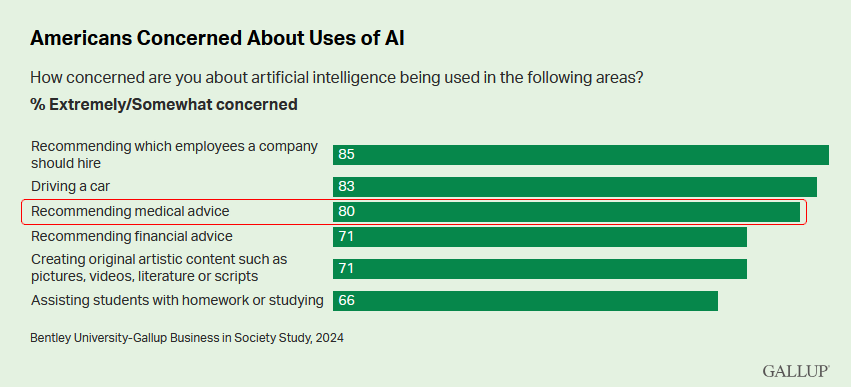

Monday, November 25, 2024

AI has exploded in popularity over that past few years sparked by the public releases of Stable Diffusion and ChatGPT. You probably have seen AI used to answer your Google searches, or to make quick and simple artwork for blogs or projects. You might have even read entire news articles written with AI. We are seeing AI being incorporated into more and more industries, including customer service, marking, cybersecurity, software development, content creation, and now, healthcare.
Using AI in healthcare will bring many benefits to patients, doctors, and staff:
Earlier this year, there was a study study on if AI could answer medical questions better that actual doctors. In nearly 80% of the answers, ChatGPT gave better answers then the physicians. For the quality of answers, ChatGPT was given good/very-good 78% of the time, compared to 22%, and for empathetic answers, the bot scored 45%, while the physician only got 4.6%. It was also able to do it in an average of a quarter of the length.
Sounds great, right? Well, not to everyone. When surveyed, a strong majority of Americans are concerned or uncomfortable with AI in healthcare. They have concerns about privacy of their health data, and the reliability, transparency, and security of the AI. If you are a part of the majority that is concerned, I hope to show you what is being done to address these concerns, so that AI can be used to build a better and healthier tomorrow.

One of the biggest concerns is over privacy. With 75% of people surveyed being concerned about protecting the privacy of their health data, with also 75% of patients wanting it to be required to opt-in before a company can use any of their health data.
The current mainstream versions of AI, like ChatGPT, use central modals with massive datasets. If this system was used, then the private medical data for everyone who opted-in would be sent to central location to process. This would be a nightmare for transparency, and cause the opt-in rate to be quite low, hindering the model’s accuracy. It might also face legal challenges with privacy laws like the Health Insurance Portability and Accountability Act (HIPPA), General Data Protection Regulation (GDPR), and California Consumer Privacy Act (CCPA).
One alternative would be for each medical center or company to have it’s own AI models. While this would keep all the sensitive data in one place, the quality of the output would suffer due to the limited data to train the AI model.
Luckily, there is a solution that both has the accuracy of central models and the privacy of local ones. This technique is called “Federated Distillation”, which is combination of Federated learning, and Knowledge distillation. Federated learning is the process of aggregating all the local models, which are trained on private data, into a single global modal. Knowledge distillation is a technique for transferring knowledge between the models.
The method isn’t quite ready for mainstream use just yet, but it’s getting really close! Earlier this year, a set of researchers were able to solve one the main pain weaknesses of Federated Distillation: ambiguous predictions and high entropy caused by inconsistencies in local models.

Is AI secure? Just like any other tool, especially software ones, AI needs to have strong security, to avoid adversarial attacks. Older AI models used when testing medical AI imaging systems, are susceptible to misrepresentations of the data. It was found that adding specific unnoticeable “noise” to an image could change what the AI model thought it was. It might seem weird that someone might want to manipulate the input, but this type of manipulation already occurs in the medical industry. This is usually done to get insurances to approve reimbursements. For example, doctors can use certain “medical codes” instead of the most straight forward one. A less likely concern would be intentional sabotage of the training data. However, when it comes to people’s health, nothing can be too secure.
Like most things in cybersecurity, there isn’t a single solution, but by following mitigation recommendations and employing robust models/algorithms, security concerns the possibility of attack are a lot lower. It might even be more secure then individual people!

Can AI give correct answers, and how would we know? Generative AI, like ChatGPT, has been known to hallucinate, like a lot. And remember those old object recognition that was hilariously wrong sometimes? Well luckily for us, AI has come a long way since then, and as long as enough data is given to it and it’s properly trained, the outcomes should be accurate. But how would we know if it’s actually accurate or not?
That’s where Explainable AI (EXAI) comes in. EXAI is a type of model or a method on a model that allows for the AI to explain how it came to it’s conclusion. While right now you can ask the AI afterwards why it came to it’s conclusion, it would be susceptible to fabrication.
This is probably the biggest roadblock AI needs to get over before AI in healthcare is viable. There are currently some EXAI models, like Google’s Vertex AI, but more research and testing is needed.
AI is starting to transforming the healthcare industry, revolutionize patient care, improving imaging and diagnostic accuracy, and easing administrative burdens. However, privacy concerns, security vulnerabilities, and the reliability and explainability of AI systems are critical issues mentioned above must be addressed to build public trust.
Solutions like Federated Distillation allow the best of both data privacy with the accuracy of big centralized AI models. Robust cybersecurity measures and advancements in Explainable AI are further paving the way for secure and transparent AI. These developments, combined with ongoing research and collaboration between AI engineers, healthcare professionals, and policymakers, can help mitigate risks and ensure that AI becomes a trusted ally in medicine.
The journey toward widespread acceptance of AI in healthcare is still unfolding, but the potential rewards, a healthier, more accessible, and efficient future, are worth pursuing. We can harness AI's power responsibly, paving the way for a healthcare system that truly serves everyone.
As someone who’s worked in healthcare for years, I’ve seen the challenges AI could help solve, like administrative burdens and improving diagnosis accuracy. That said, ongoing training for healthcare professionals will be essential to integrate AI seamlessly into their practices
I’m all for innovation, but handing over control of healthcare decisions to AI is a dangerous path. Machines may never understand the full complexities of human emotions and situations. We can’t risk patient care becoming robotic.
AI can't replace the human touch, I agree, but it’s important to remember that AI in healthcare isn’t about replacing doctors—it's about enhancing their ability to make faster, more accurate decisions. AI can analyze vast amounts of data quickly, helping doctors spot patterns and diagnoses that may otherwise go unnoticed. It’s a tool to support, not replace, healthcare professionals. By automating routine tasks, AI can also free up more time for doctors to focus on patient care, ensuring that the emotional and human aspects of medicine are never lost.
Stay Informed, Stay Ahead – Join Our Newsletter Today!

Your Trusted Source for the Latest News, Insights, and In-Depth Analysis on Technology, Healthcare, and the Issues Shaping Our Future
Site Template Designed by HTML Codex